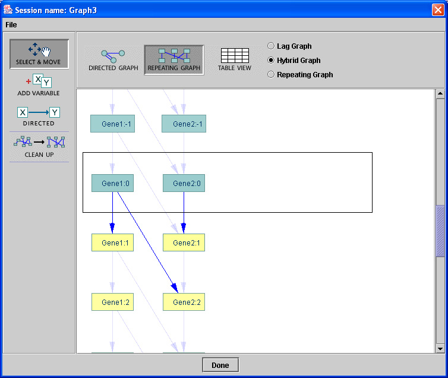

If instead of "Regular Graph" you click on "Time Series Graph" you will obtain a quite different window in which you can introduce variables named "Gene n". Currently the Time Series Graphs have very limited use for generating simulated data. Currently only a single dependency function is implemented, a generalization of the Glass model of gene expression.

As soon as you introduce a variable, an edge appears directed from that variable into itself with a number 1 attached. That is because you are seeing a compact representation of a time series, in which the structure in the Directed Graph window is repeated over and over. The number attached to an edge
indicates the time delay (in steps of arbitrary time measure) for the infljuence represented by the directed edge to occur.
You can add and delete variables, change their names, add and delete directed edges, and change the time delays (by double clicking on a number).
Unlike with "Regular" graphs, a time series directed graph can have two or more edges between variables, so long each such edge has a different number. These multiple edges represent influences with different time delays.
. You can see a graphical depiction of the time series itself by clicking on "Repeating Graph":

This representation of the time series graph that comes up is sometimes a bit messy. Clicking on the :"Clean Up" tool button cleans it up a bit.
There are 3 buttons on the top menu of the "Repeating Graph": Lag Graph, Hybrid Graph and Repeating Graph.
Lag graph shows only the repeating structure. Hybrid Graph, which is often the most revealing, shows one instance of the repeating structure highlighted and other repetitions dimmed. Repeating Graph shows a long series of repetitions all highlighted. The picture above is of a Hybrid graph. The graphical
structures are the same in all three choices; only the display is different.
You can make the same sorts of changes in the Repeating Graph window that you can make in the Directed Graph window.
The Table View will show which variables each variable depends on, and the lags.
The File menu is currently useless..